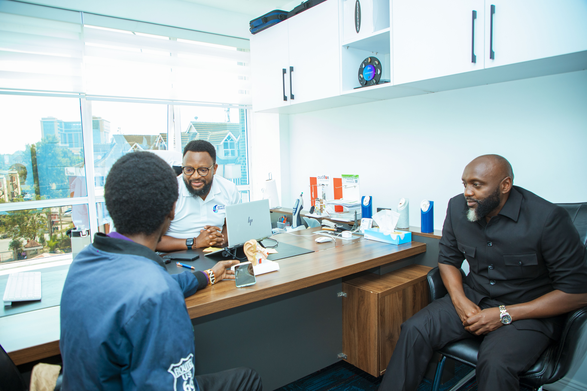

Doctors of Hearing · Kenya
The Future Of
Hearing Today
Kenya’s Leading Evidence-Based Audiology, Hearing & Balance Centre
Where clinical excellence, advanced technology and personalized care come together to redefine your hearing healthcare experience.
Thorough assessment
Modern diagnostics
Individual guidance
Ongoing support
How we can help
Care that meets you
where you are.
From a first hearing check to ongoing support, explore services for different ages, needs and stages of life.
Hearing & balance testing
Explore hearing and balance assessments, and find out what to expect.
02 / SUPPORTHearing care
Discuss hearing care, devices and support options with our team.
03 / GROWChildren & newborns
Learn about paediatric audiology and newborn hearing screening.
04 / CONNECTHome visits
See information about arranging hearing-care support at home.

Choose your next step.
Thoughtful expertise
Clarity makes
all the difference.
Good care starts with listening. Our team offers hearing and balance testing, explains findings, and helps you make sense of the options available to you.
- Clear explanations and time for questions
- Services for children and adults
- Guidance on hearing aids and aftercare
Hearing health, explained
Find answers
for your concerns.
Explore practical information about hearing, balance and related conditions.
Ask the audiologistPeople behind your care
Meet the professionals
who listen first.
Get to know our lead consultant and specialist team, and the people who support your hearing-care journey.
Meet our teamLEAD CONSULTANT
Richard Mwangi
Lead Consultant Audiologist / Audiovestibular
Meet Richard Meet the full specialist teamLearn, explore, connect
More support
for your journey.
Find patient experiences, hearing-health resources and research from Doctors of Hearing.
Browse resourceswe've supported. PUBLICATIONS & RESEARCHExplore our research
and publications.
A good place to start
Questions about
hearing care?
For personal advice, contact the clinic to discuss your needs with the team.
More hearing-health answersWhen should I consider a hearing test?
If you have concerns about your hearing or balance, or would like an assessment, contact the clinic to discuss which appointment may suit you.
Do you offer hearing care for children?
Doctors of Hearing lists paediatric audiology and newborn hearing screening among its services. Contact the team for information about arranging care.
What happens after an assessment?
Your audiology professional can explain your results, answer questions and discuss possible next steps based on your assessment.
Your next step starts here
Let's talk about
better hearing.
Reach out to our team to ask a question or discuss an appointment.
Contact Doctors of Hearing